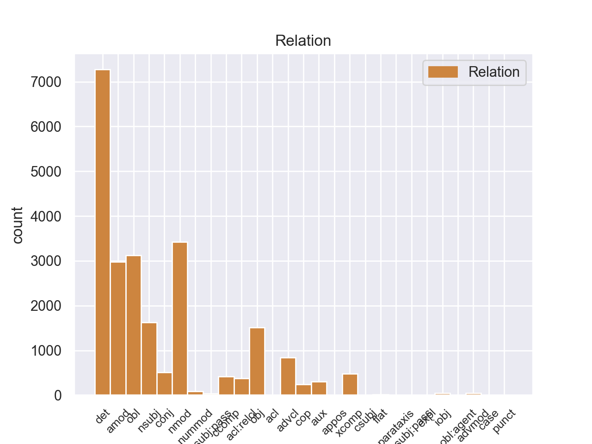
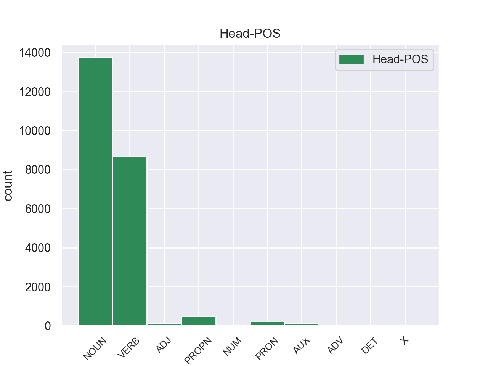
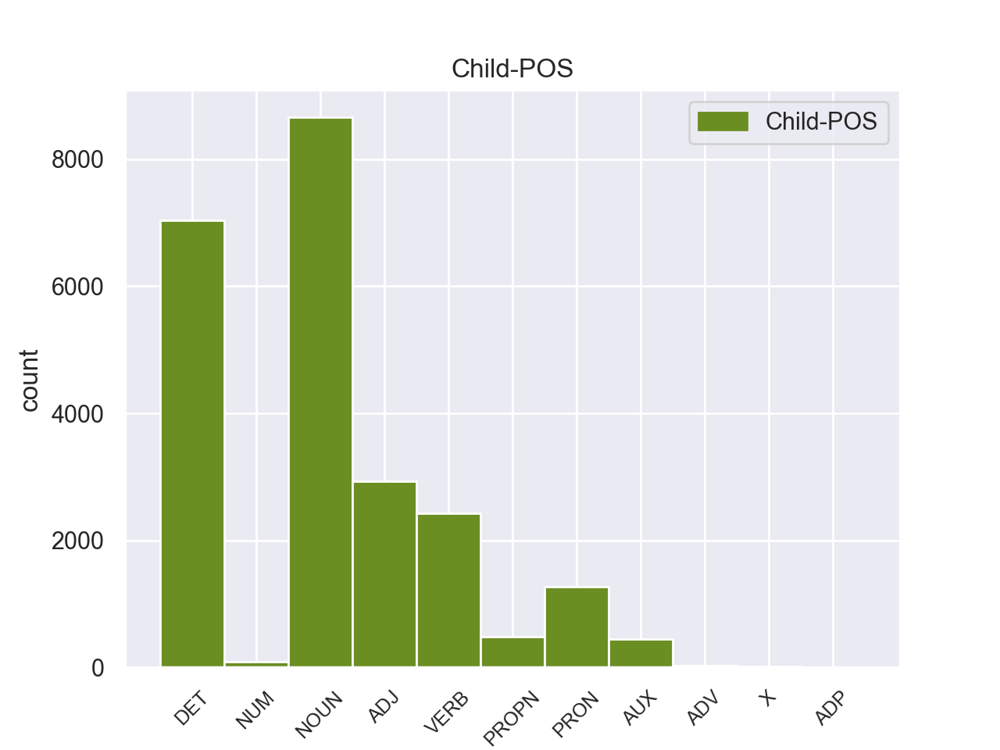

Distribution of features within this leaf



Agreement Rules sorted by frequency.
- When the dependent token is the determiner(det) of the head token,
1 Αυτό _ _ _ _ 0 _ _ _
2 μπορεί _ _ _ _ 0 _ _ _
3 να _ _ _ _ 0 _ _ _
4 μην _ _ _ _ 0 _ _ _
5 οδηγήσει _ _ _ _ 0 _ _ _
6 σ _ _ _ _ 0 _ _ _
7 τη _ _ _ _ 0 _ _ _
8 λήξη _ _ _ _ 0 _ _ _
9 του _ _ _ _ 0 _ _ _
10 εν _ _ _ _ 0 _ _ _
11 λόγω _ _ _ _ 0 _ _ _
12 ζητήματος _ _ _ _ 0 _ _ _
13 αλλά _ _ _ _ 0 _ _ _
14 , _ _ _ _ 0 _ _ _
15 σ _ _ _ _ 0 _ _ _
16 τη _ _ _ _ 0 _ _ _
17 μορφή _ _ _ _ 0 _ _ _
18 υπό _ _ _ _ 0 _ _ _
19 την _ _ _ _ 0 _ _ _
20 οποία _ _ _ _ 0 _ _ _
21 την _ _ _ _ 0 _ _ _
22 λάβαμε _ _ _ _ 0 _ _ _
23 , _ _ _ _ 0 _ _ _
24 αυτή _ _ _ _ 0 _ _ _
25 η _ _ _ _ 0 _ _ _
26 αίτηση _ _ _ _ 0 _ _ _
27 άρσης _ _ _ _ 0 _ _ _
28 της _ _ _ _ 0 _ _ _
29 ασυλίας _ _ _ _ 0 _ _ _
30 ήταν _ _ _ _ 0 _ _ _
31 , _ _ _ _ 0 _ _ _
32 κατά _ _ _ _ 0 _ _ _
33 την _ _ _ _ 0 _ _ _
34 άποψη _ _ _ _ 0 _ _ _
35 της _ _ _ _ 0 _ _ _
36 Επιτροπής _ _ _ _ 0 _ _ _
37 Νομικών _ _ _ _ 0 _ _ _
38 Θεμάτων _ _ _ _ 0 _ _ _
39 , _ _ _ _ 0 _ _ _
40 απαράδεκτη _ _ _ _ 0 _ _ _
41 , _ _ _ _ 0 _ _ _
42 άποψη _ _ _ _ 0 _ _ _
43 την _ _ _ _ 0 _ _ _
44 οποία _ _ _ _ 0 _ _ _
45 συνιστώ _ _ _ _ 0 _ _ _
46 σ _ _ _ _ 0 _ _ _
47 το ο DET _ Case=Acc|Gender=Neut|Number=Sing 48 det _ _
48 Σώμα σώμα NOUN _ Case=Acc|Gender=Neut|Number=Sing 0 _ _ _
49 να _ _ _ _ 0 _ _ _
50 υιοθετήσει _ _ _ _ 0 _ _ _
51 . _ _ _ _ 0 _ _ _
1 Αυτό _ _ _ _ 0 _ _ _
2 μπορεί _ _ _ _ 0 _ _ _
3 να _ _ _ _ 0 _ _ _
4 μην _ _ _ _ 0 _ _ _
5 οδηγήσει _ _ _ _ 0 _ _ _
6 σ _ _ _ _ 0 _ _ _
7 τη _ _ _ _ 0 _ _ _
8 λήξη _ _ _ _ 0 _ _ _
9 του _ _ _ _ 0 _ _ _
10 εν _ _ _ _ 0 _ _ _
11 λόγω _ _ _ _ 0 _ _ _
12 ζητήματος _ _ _ _ 0 _ _ _
13 αλλά _ _ _ _ 0 _ _ _
14 , _ _ _ _ 0 _ _ _
15 σ _ _ _ _ 0 _ _ _
16 τη _ _ _ _ 0 _ _ _
17 μορφή _ _ _ _ 0 _ _ _
18 υπό _ _ _ _ 0 _ _ _
19 την _ _ _ _ 0 _ _ _
20 οποία _ _ _ _ 0 _ _ _
21 την _ _ _ _ 0 _ _ _
22 λάβαμε _ _ _ _ 0 _ _ _
23 , _ _ _ _ 0 _ _ _
24 αυτή _ _ _ _ 0 _ _ _
25 η _ _ _ _ 0 _ _ _
26 αίτηση _ _ _ _ 0 _ _ _
27 άρσης _ _ _ _ 0 _ _ _
28 της _ _ _ _ 0 _ _ _
29 ασυλίας _ _ _ _ 0 _ _ _
30 ήταν _ _ _ _ 0 _ _ _
31 , _ _ _ _ 0 _ _ _
32 κατά _ _ _ _ 0 _ _ _
33 την _ _ _ _ 0 _ _ _
34 άποψη _ _ _ _ 0 _ _ _
35 της _ _ _ _ 0 _ _ _
36 Επιτροπής _ _ _ _ 0 _ _ _
37 Νομικών _ _ _ _ 0 _ _ _
38 Θεμάτων _ _ _ _ 0 _ _ _
39 , _ _ _ _ 0 _ _ _
40 απαράδεκτη απαράδεκτη ADJ _ Case=Acc|Gender=Fem|Number=Sing 42 amod _ _
41 , _ _ _ _ 0 _ _ _
42 άποψη άποψη NOUN _ Case=Acc|Gender=Fem|Number=Sing 0 _ _ _
43 την _ _ _ _ 0 _ _ _
44 οποία _ _ _ _ 0 _ _ _
45 συνιστώ _ _ _ _ 0 _ _ _
46 σ _ _ _ _ 0 _ _ _
47 το _ _ _ _ 0 _ _ _
48 Σώμα _ _ _ _ 0 _ _ _
49 να _ _ _ _ 0 _ _ _
50 υιοθετήσει _ _ _ _ 0 _ _ _
51 . _ _ _ _ 0 _ _ _
1 Αυτό _ _ _ _ 0 _ _ _
2 μπορεί _ _ _ _ 0 _ _ _
3 να _ _ _ _ 0 _ _ _
4 μην _ _ _ _ 0 _ _ _
5 οδηγήσει _ _ _ _ 0 _ _ _
6 σ _ _ _ _ 0 _ _ _
7 τη _ _ _ _ 0 _ _ _
8 λήξη _ _ _ _ 0 _ _ _
9 του _ _ _ _ 0 _ _ _
10 εν _ _ _ _ 0 _ _ _
11 λόγω _ _ _ _ 0 _ _ _
12 ζητήματος _ _ _ _ 0 _ _ _
13 αλλά _ _ _ _ 0 _ _ _
14 , _ _ _ _ 0 _ _ _
15 σ _ _ _ _ 0 _ _ _
16 τη _ _ _ _ 0 _ _ _
17 μορφή _ _ _ _ 0 _ _ _
18 υπό _ _ _ _ 0 _ _ _
19 την _ _ _ _ 0 _ _ _
20 οποία _ _ _ _ 0 _ _ _
21 την _ _ _ _ 0 _ _ _
22 λάβαμε _ _ _ _ 0 _ _ _
23 , _ _ _ _ 0 _ _ _
24 αυτή _ _ _ _ 0 _ _ _
25 η _ _ _ _ 0 _ _ _
26 αίτηση _ _ _ _ 0 _ _ _
27 άρσης _ _ _ _ 0 _ _ _
28 της _ _ _ _ 0 _ _ _
29 ασυλίας _ _ _ _ 0 _ _ _
30 ήταν _ _ _ _ 0 _ _ _
31 , _ _ _ _ 0 _ _ _
32 κατά _ _ _ _ 0 _ _ _
33 την _ _ _ _ 0 _ _ _
34 άποψη άποψη NOUN _ Case=Acc|Gender=Fem|Number=Sing 0 _ _ _
35 της _ _ _ _ 0 _ _ _
36 Επιτροπής επιτροπή NOUN _ Case=Gen|Gender=Fem|Number=Sing 34 nmod _ _
37 Νομικών _ _ _ _ 0 _ _ _
38 Θεμάτων _ _ _ _ 0 _ _ _
39 , _ _ _ _ 0 _ _ _
40 απαράδεκτη _ _ _ _ 0 _ _ _
41 , _ _ _ _ 0 _ _ _
42 άποψη _ _ _ _ 0 _ _ _
43 την _ _ _ _ 0 _ _ _
44 οποία _ _ _ _ 0 _ _ _
45 συνιστώ _ _ _ _ 0 _ _ _
46 σ _ _ _ _ 0 _ _ _
47 το _ _ _ _ 0 _ _ _
48 Σώμα _ _ _ _ 0 _ _ _
49 να _ _ _ _ 0 _ _ _
50 υιοθετήσει _ _ _ _ 0 _ _ _
51 . _ _ _ _ 0 _ _ _
1 Αυτό _ _ _ _ 0 _ _ _
2 μπορεί _ _ _ _ 0 _ _ _
3 να _ _ _ _ 0 _ _ _
4 μην _ _ _ _ 0 _ _ _
5 οδηγήσει _ _ _ _ 0 _ _ _
6 σ _ _ _ _ 0 _ _ _
7 τη _ _ _ _ 0 _ _ _
8 λήξη _ _ _ _ 0 _ _ _
9 του _ _ _ _ 0 _ _ _
10 εν _ _ _ _ 0 _ _ _
11 λόγω _ _ _ _ 0 _ _ _
12 ζητήματος _ _ _ _ 0 _ _ _
13 αλλά _ _ _ _ 0 _ _ _
14 , _ _ _ _ 0 _ _ _
15 σ _ _ _ _ 0 _ _ _
16 τη _ _ _ _ 0 _ _ _
17 μορφή _ _ _ _ 0 _ _ _
18 υπό _ _ _ _ 0 _ _ _
19 την _ _ _ _ 0 _ _ _
20 οποία _ _ _ _ 0 _ _ _
21 την _ _ _ _ 0 _ _ _
22 λάβαμε _ _ _ _ 0 _ _ _
23 , _ _ _ _ 0 _ _ _
24 αυτή _ _ _ _ 0 _ _ _
25 η _ _ _ _ 0 _ _ _
26 αίτηση _ _ _ _ 0 _ _ _
27 άρσης _ _ _ _ 0 _ _ _
28 της _ _ _ _ 0 _ _ _
29 ασυλίας _ _ _ _ 0 _ _ _
30 ήταν _ _ _ _ 0 _ _ _
31 , _ _ _ _ 0 _ _ _
32 κατά _ _ _ _ 0 _ _ _
33 την _ _ _ _ 0 _ _ _
34 άποψη _ _ _ _ 0 _ _ _
35 της _ _ _ _ 0 _ _ _
36 Επιτροπής _ _ _ _ 0 _ _ _
37 Νομικών _ _ _ _ 0 _ _ _
38 Θεμάτων _ _ _ _ 0 _ _ _
39 , _ _ _ _ 0 _ _ _
40 απαράδεκτη _ _ _ _ 0 _ _ _
41 , _ _ _ _ 0 _ _ _
42 άποψη _ _ _ _ 0 _ _ _
43 την _ _ _ _ 0 _ _ _
44 οποία _ _ _ _ 0 _ _ _
45 συνιστώ _ _ _ _ 0 _ _ _
46 σ _ _ _ _ 0 _ _ _
47 το _ _ _ _ 0 _ _ _
48 Σώμα σώμα NOUN _ Case=Acc|Gender=Neut|Number=Sing 50 obl _ _
49 να _ _ _ _ 0 _ _ _
50 υιοθετήσει υιοθετήσει VERB _ Aspect=Perf|Mood=Ind|Number=Sing|Person=3|VerbForm=Fin|Voice=Act 0 _ _ _
51 . _ _ _ _ 0 _ _ _
1 Ευελπιστώ _ _ _ _ 0 _ _ _
2 ότι _ _ _ _ 0 _ _ _
3 η _ _ _ _ 0 _ _ _
4 απόφαση απόφαση NOUN _ Case=Acc|Gender=Fem|Number=Sing 17 nsubj _ _
5 αυτή _ _ _ _ 0 _ _ _
6 , _ _ _ _ 0 _ _ _
7 συμπεριλαμβανομένης _ _ _ _ 0 _ _ _
8 και _ _ _ _ 0 _ _ _
9 της _ _ _ _ 0 _ _ _
10 αιτιολογικής _ _ _ _ 0 _ _ _
11 έκθεσης _ _ _ _ 0 _ _ _
12 που _ _ _ _ 0 _ _ _
13 την _ _ _ _ 0 _ _ _
14 συνοδεύει _ _ _ _ 0 _ _ _
15 , _ _ _ _ 0 _ _ _
16 θα _ _ _ _ 0 _ _ _
17 διαβιβαστεί διαβιβαστεί VERB _ Aspect=Perf|Mood=Ind|Number=Sing|Person=3|VerbForm=Fin|Voice=Act 0 _ _ _
18 σ _ _ _ _ 0 _ _ _
19 τις _ _ _ _ 0 _ _ _
20 γαλλικές _ _ _ _ 0 _ _ _
21 αρχές _ _ _ _ 0 _ _ _
22 , _ _ _ _ 0 _ _ _
23 εφόσον _ _ _ _ 0 _ _ _
24 υπερψηφιστεί _ _ _ _ 0 _ _ _
25 από _ _ _ _ 0 _ _ _
26 το _ _ _ _ 0 _ _ _
27 Κοινοβούλιο _ _ _ _ 0 _ _ _
28 . _ _ _ _ 0 _ _ _
1 Υπ' _ _ _ _ 0 _ _ _
2 αυτές _ _ _ _ 0 _ _ _
3 τις _ _ _ _ 0 _ _ _
4 συνθήκες _ _ _ _ 0 _ _ _
5 , _ _ _ _ 0 _ _ _
6 η _ _ _ _ 0 _ _ _
7 Επιτροπή _ _ _ _ 0 _ _ _
8 Νομικών _ _ _ _ 0 _ _ _
9 Θεμάτων _ _ _ _ 0 _ _ _
10 , _ _ _ _ 0 _ _ _
11 της _ _ _ _ 0 _ _ _
12 οποίας _ _ _ _ 0 _ _ _
13 τη _ _ _ _ 0 _ _ _
14 θέση _ _ _ _ 0 _ _ _
15 αποδέχομαι _ _ _ _ 0 _ _ _
16 πλήρως _ _ _ _ 0 _ _ _
17 , _ _ _ _ 0 _ _ _
18 προτείνει προτείνει VERB _ Aspect=Perf|Mood=Ind|Number=Sing|Person=3|Tense=Past|VerbForm=Fin|Voice=Act 0 _ _ _
19 την _ _ _ _ 0 _ _ _
20 απόρριψη απόρριψη NOUN _ Case=Acc|Gender=Fem|Number=Sing 18 obj _ _
21 της _ _ _ _ 0 _ _ _
22 αίτησης _ _ _ _ 0 _ _ _
23 άρσης _ _ _ _ 0 _ _ _
24 της _ _ _ _ 0 _ _ _
25 βουλευτικής _ _ _ _ 0 _ _ _
26 ασυλίας _ _ _ _ 0 _ _ _
27 την _ _ _ _ 0 _ _ _
28 οποία _ _ _ _ 0 _ _ _
29 υπέβαλε _ _ _ _ 0 _ _ _
30 το _ _ _ _ 0 _ _ _
31 γαλλικό _ _ _ _ 0 _ _ _
32 Υπουργείο _ _ _ _ 0 _ _ _
33 Δικαιοσύνης _ _ _ _ 0 _ _ _
34 , _ _ _ _ 0 _ _ _
35 σ _ _ _ _ 0 _ _ _
36 τη _ _ _ _ 0 _ _ _
37 μορφή _ _ _ _ 0 _ _ _
38 υπό _ _ _ _ 0 _ _ _
39 την _ _ _ _ 0 _ _ _
40 οποία _ _ _ _ 0 _ _ _
41 υποβλήθηκε _ _ _ _ 0 _ _ _
42 σ _ _ _ _ 0 _ _ _
43 το _ _ _ _ 0 _ _ _
44 Κοινοβούλιο _ _ _ _ 0 _ _ _
45 . _ _ _ _ 0 _ _ _
1 πρόκειται _ _ _ _ 0 _ _ _
2 για _ _ _ _ 0 _ _ _
3 αυτό _ _ _ _ 0 _ _ _
4 το _ _ _ _ 0 _ _ _
5 οποίο _ _ _ _ 0 _ _ _
6 αποκαλύφθηκε αποκαλύφθηκε VERB _ Aspect=Perf|Mood=Ind|Number=Sing|Person=3|Tense=Past|VerbForm=Fin|Voice=Pass 19 advcl _ _
7 κατά _ _ _ _ 0 _ _ _
8 τη _ _ _ _ 0 _ _ _
9 διάρκεια _ _ _ _ 0 _ _ _
10 αυτής _ _ _ _ 0 _ _ _
11 της _ _ _ _ 0 _ _ _
12 διαδικασίας _ _ _ _ 0 _ _ _
13 , _ _ _ _ 0 _ _ _
14 ότι _ _ _ _ 0 _ _ _
15 ο _ _ _ _ 0 _ _ _
16 Εισαγγελέας _ _ _ _ 0 _ _ _
17 κάποια _ _ _ _ 0 _ _ _
18 στιγμή _ _ _ _ 0 _ _ _
19 ζήτησε ζήτησε VERB _ Aspect=Perf|Mood=Ind|Number=Sing|Person=3|Tense=Past|VerbForm=Fin|Voice=Act 0 _ _ _
20 από _ _ _ _ 0 _ _ _
21 την _ _ _ _ 0 _ _ _
22 Πρόεδρο _ _ _ _ 0 _ _ _
23 του _ _ _ _ 0 _ _ _
24 Σώματος _ _ _ _ 0 _ _ _
25 , _ _ _ _ 0 _ _ _
26 την _ _ _ _ 0 _ _ _
27 προκάτοχό _ _ _ _ 0 _ _ _
28 σας _ _ _ _ 0 _ _ _
29 , _ _ _ _ 0 _ _ _
30 λεπτομέρειες _ _ _ _ 0 _ _ _
31 για _ _ _ _ 0 _ _ _
32 την _ _ _ _ 0 _ _ _
33 ψήφο _ _ _ _ 0 _ _ _
34 που _ _ _ _ 0 _ _ _
35 έχουν _ _ _ _ 0 _ _ _
36 δώσει _ _ _ _ 0 _ _ _
37 οι _ _ _ _ 0 _ _ _
38 δύο _ _ _ _ 0 _ _ _
39 συγκεκριμένοι _ _ _ _ 0 _ _ _
40 βουλευτές _ _ _ _ 0 _ _ _
41 προκειμένου _ _ _ _ 0 _ _ _
42 να _ _ _ _ 0 _ _ _
43 διευκρινιστεί _ _ _ _ 0 _ _ _
44 περαιτέρω _ _ _ _ 0 _ _ _
45 η _ _ _ _ 0 _ _ _
46 πιθανότητα _ _ _ _ 0 _ _ _
47 να _ _ _ _ 0 _ _ _
48 είχαν _ _ _ _ 0 _ _ _
49 ασκήσει _ _ _ _ 0 _ _ _
50 αθέμιτη _ _ _ _ 0 _ _ _
51 επιρροή _ _ _ _ 0 _ _ _
52 . _ _ _ _ 0 _ _ _
1 πρόκειται _ _ _ _ 0 _ _ _
2 για _ _ _ _ 0 _ _ _
3 αυτό _ _ _ _ 0 _ _ _
4 το _ _ _ _ 0 _ _ _
5 οποίο _ _ _ _ 0 _ _ _
6 αποκαλύφθηκε _ _ _ _ 0 _ _ _
7 κατά _ _ _ _ 0 _ _ _
8 τη _ _ _ _ 0 _ _ _
9 διάρκεια _ _ _ _ 0 _ _ _
10 αυτής _ _ _ _ 0 _ _ _
11 της _ _ _ _ 0 _ _ _
12 διαδικασίας _ _ _ _ 0 _ _ _
13 , _ _ _ _ 0 _ _ _
14 ότι _ _ _ _ 0 _ _ _
15 ο _ _ _ _ 0 _ _ _
16 Εισαγγελέας _ _ _ _ 0 _ _ _
17 κάποια _ _ _ _ 0 _ _ _
18 στιγμή _ _ _ _ 0 _ _ _
19 ζήτησε _ _ _ _ 0 _ _ _
20 από _ _ _ _ 0 _ _ _
21 την _ _ _ _ 0 _ _ _
22 Πρόεδρο _ _ _ _ 0 _ _ _
23 του _ _ _ _ 0 _ _ _
24 Σώματος _ _ _ _ 0 _ _ _
25 , _ _ _ _ 0 _ _ _
26 την _ _ _ _ 0 _ _ _
27 προκάτοχό _ _ _ _ 0 _ _ _
28 σας _ _ _ _ 0 _ _ _
29 , _ _ _ _ 0 _ _ _
30 λεπτομέρειες _ _ _ _ 0 _ _ _
31 για _ _ _ _ 0 _ _ _
32 την _ _ _ _ 0 _ _ _
33 ψήφο _ _ _ _ 0 _ _ _
34 που _ _ _ _ 0 _ _ _
35 έχουν _ _ _ _ 0 _ _ _
36 δώσει δώσει VERB _ Aspect=Perf|Mood=Ind|Number=Sing|Person=3|VerbForm=Fin|Voice=Act 0 _ _ _
37 οι _ _ _ _ 0 _ _ _
38 δύο _ _ _ _ 0 _ _ _
39 συγκεκριμένοι _ _ _ _ 0 _ _ _
40 βουλευτές _ _ _ _ 0 _ _ _
41 προκειμένου _ _ _ _ 0 _ _ _
42 να _ _ _ _ 0 _ _ _
43 διευκρινιστεί διευκρινιστεί VERB _ Aspect=Perf|Mood=Ind|Number=Sing|Person=3|VerbForm=Fin|Voice=Act 36 conj _ _
44 περαιτέρω _ _ _ _ 0 _ _ _
45 η _ _ _ _ 0 _ _ _
46 πιθανότητα _ _ _ _ 0 _ _ _
47 να _ _ _ _ 0 _ _ _
48 είχαν _ _ _ _ 0 _ _ _
49 ασκήσει _ _ _ _ 0 _ _ _
50 αθέμιτη _ _ _ _ 0 _ _ _
51 επιρροή _ _ _ _ 0 _ _ _
52 . _ _ _ _ 0 _ _ _
1 Είναι _ _ _ _ 0 _ _ _
2 σημαντικό _ _ _ _ 0 _ _ _
3 να _ _ _ _ 0 _ _ _
4 υπογραμμίσω _ _ _ _ 0 _ _ _
5 το _ _ _ _ 0 _ _ _
6 γεγονός _ _ _ _ 0 _ _ _
7 ότι _ _ _ _ 0 _ _ _
8 και _ _ _ _ 0 _ _ _
9 οι _ _ _ _ 0 _ _ _
10 δύο _ _ _ _ 0 _ _ _
11 βουλευτές _ _ _ _ 0 _ _ _
12 διατρανώνουν _ _ _ _ 0 _ _ _
13 σθεναρά _ _ _ _ 0 _ _ _
14 την _ _ _ _ 0 _ _ _
15 αθωότητά _ _ _ _ 0 _ _ _
16 τους _ _ _ _ 0 _ _ _
17 και _ _ _ _ 0 _ _ _
18 καταγγέλλουν _ _ _ _ 0 _ _ _
19 αυτό _ _ _ _ 0 _ _ _
20 που _ _ _ _ 0 _ _ _
21 οι _ _ _ _ 0 _ _ _
22 ίδιοι _ _ _ _ 0 _ _ _
23 θεωρούν θεωρούν VERB _ Aspect=Imp|Mood=Ind|Number=Plur|Person=3|Tense=Pres|VerbForm=Fin|Voice=Act 0 _ _ _
24 καταχρήσεις καταχρήσεις NOUN _ Case=Nom|Gender=Neut|Number=Plur 23 xcomp _ _
25 σ _ _ _ _ 0 _ _ _
26 τη _ _ _ _ 0 _ _ _
27 διαδικασία _ _ _ _ 0 _ _ _
28 δίωξης _ _ _ _ 0 _ _ _
29 . _ _ _ _ 0 _ _ _
1 Ευελπιστώ ευελπιστώ VERB _ Aspect=Imp|Mood=Ind|Number=Sing|Person=1|Tense=Pres|VerbForm=Fin|Voice=Act 0 _ _ _
2 ότι _ _ _ _ 0 _ _ _
3 η _ _ _ _ 0 _ _ _
4 απόφαση _ _ _ _ 0 _ _ _
5 αυτή _ _ _ _ 0 _ _ _
6 , _ _ _ _ 0 _ _ _
7 συμπεριλαμβανομένης _ _ _ _ 0 _ _ _
8 και _ _ _ _ 0 _ _ _
9 της _ _ _ _ 0 _ _ _
10 αιτιολογικής _ _ _ _ 0 _ _ _
11 έκθεσης _ _ _ _ 0 _ _ _
12 που _ _ _ _ 0 _ _ _
13 την _ _ _ _ 0 _ _ _
14 συνοδεύει _ _ _ _ 0 _ _ _
15 , _ _ _ _ 0 _ _ _
16 θα _ _ _ _ 0 _ _ _
17 διαβιβαστεί διαβιβαστεί VERB _ Aspect=Perf|Mood=Ind|Number=Sing|Person=3|VerbForm=Fin|Voice=Act 1 ccomp _ _
18 σ _ _ _ _ 0 _ _ _
19 τις _ _ _ _ 0 _ _ _
20 γαλλικές _ _ _ _ 0 _ _ _
21 αρχές _ _ _ _ 0 _ _ _
22 , _ _ _ _ 0 _ _ _
23 εφόσον _ _ _ _ 0 _ _ _
24 υπερψηφιστεί _ _ _ _ 0 _ _ _
25 από _ _ _ _ 0 _ _ _
26 το _ _ _ _ 0 _ _ _
27 Κοινοβούλιο _ _ _ _ 0 _ _ _
28 . _ _ _ _ 0 _ _ _
1 Αυτό _ _ _ _ 0 _ _ _
2 μπορεί _ _ _ _ 0 _ _ _
3 να _ _ _ _ 0 _ _ _
4 μην _ _ _ _ 0 _ _ _
5 οδηγήσει _ _ _ _ 0 _ _ _
6 σ _ _ _ _ 0 _ _ _
7 τη _ _ _ _ 0 _ _ _
8 λήξη _ _ _ _ 0 _ _ _
9 του _ _ _ _ 0 _ _ _
10 εν _ _ _ _ 0 _ _ _
11 λόγω _ _ _ _ 0 _ _ _
12 ζητήματος _ _ _ _ 0 _ _ _
13 αλλά _ _ _ _ 0 _ _ _
14 , _ _ _ _ 0 _ _ _
15 σ _ _ _ _ 0 _ _ _
16 τη _ _ _ _ 0 _ _ _
17 μορφή μορφή NOUN _ Case=Acc|Gender=Fem|Number=Sing 0 _ _ _
18 υπό _ _ _ _ 0 _ _ _
19 την _ _ _ _ 0 _ _ _
20 οποία _ _ _ _ 0 _ _ _
21 την _ _ _ _ 0 _ _ _
22 λάβαμε λάβαμε VERB _ Case=Acc|Gender=Fem|Number=Sing 17 acl:relcl _ _
23 , _ _ _ _ 0 _ _ _
24 αυτή _ _ _ _ 0 _ _ _
25 η _ _ _ _ 0 _ _ _
26 αίτηση _ _ _ _ 0 _ _ _
27 άρσης _ _ _ _ 0 _ _ _
28 της _ _ _ _ 0 _ _ _
29 ασυλίας _ _ _ _ 0 _ _ _
30 ήταν _ _ _ _ 0 _ _ _
31 , _ _ _ _ 0 _ _ _
32 κατά _ _ _ _ 0 _ _ _
33 την _ _ _ _ 0 _ _ _
34 άποψη _ _ _ _ 0 _ _ _
35 της _ _ _ _ 0 _ _ _
36 Επιτροπής _ _ _ _ 0 _ _ _
37 Νομικών _ _ _ _ 0 _ _ _
38 Θεμάτων _ _ _ _ 0 _ _ _
39 , _ _ _ _ 0 _ _ _
40 απαράδεκτη _ _ _ _ 0 _ _ _
41 , _ _ _ _ 0 _ _ _
42 άποψη _ _ _ _ 0 _ _ _
43 την _ _ _ _ 0 _ _ _
44 οποία _ _ _ _ 0 _ _ _
45 συνιστώ _ _ _ _ 0 _ _ _
46 σ _ _ _ _ 0 _ _ _
47 το _ _ _ _ 0 _ _ _
48 Σώμα _ _ _ _ 0 _ _ _
49 να _ _ _ _ 0 _ _ _
50 υιοθετήσει _ _ _ _ 0 _ _ _
51 . _ _ _ _ 0 _ _ _
1 πρόκειται _ _ _ _ 0 _ _ _
2 για _ _ _ _ 0 _ _ _
3 αυτό _ _ _ _ 0 _ _ _
4 το _ _ _ _ 0 _ _ _
5 οποίο _ _ _ _ 0 _ _ _
6 αποκαλύφθηκε _ _ _ _ 0 _ _ _
7 κατά _ _ _ _ 0 _ _ _
8 τη _ _ _ _ 0 _ _ _
9 διάρκεια _ _ _ _ 0 _ _ _
10 αυτής _ _ _ _ 0 _ _ _
11 της _ _ _ _ 0 _ _ _
12 διαδικασίας _ _ _ _ 0 _ _ _
13 , _ _ _ _ 0 _ _ _
14 ότι _ _ _ _ 0 _ _ _
15 ο _ _ _ _ 0 _ _ _
16 Εισαγγελέας _ _ _ _ 0 _ _ _
17 κάποια _ _ _ _ 0 _ _ _
18 στιγμή _ _ _ _ 0 _ _ _
19 ζήτησε _ _ _ _ 0 _ _ _
20 από _ _ _ _ 0 _ _ _
21 την _ _ _ _ 0 _ _ _
22 Πρόεδρο _ _ _ _ 0 _ _ _
23 του _ _ _ _ 0 _ _ _
24 Σώματος _ _ _ _ 0 _ _ _
25 , _ _ _ _ 0 _ _ _
26 την _ _ _ _ 0 _ _ _
27 προκάτοχό _ _ _ _ 0 _ _ _
28 σας _ _ _ _ 0 _ _ _
29 , _ _ _ _ 0 _ _ _
30 λεπτομέρειες _ _ _ _ 0 _ _ _
31 για _ _ _ _ 0 _ _ _
32 την _ _ _ _ 0 _ _ _
33 ψήφο _ _ _ _ 0 _ _ _
34 που _ _ _ _ 0 _ _ _
35 έχουν _ _ _ _ 0 _ _ _
36 δώσει _ _ _ _ 0 _ _ _
37 οι _ _ _ _ 0 _ _ _
38 δύο _ _ _ _ 0 _ _ _
39 συγκεκριμένοι _ _ _ _ 0 _ _ _
40 βουλευτές _ _ _ _ 0 _ _ _
41 προκειμένου _ _ _ _ 0 _ _ _
42 να _ _ _ _ 0 _ _ _
43 διευκρινιστεί _ _ _ _ 0 _ _ _
44 περαιτέρω _ _ _ _ 0 _ _ _
45 η _ _ _ _ 0 _ _ _
46 πιθανότητα _ _ _ _ 0 _ _ _
47 να _ _ _ _ 0 _ _ _
48 είχαν είχαν AUX _ Aspect=Imp|Mood=Ind|Number=Plur|Person=3|Tense=Pres|VerbForm=Fin|Voice=Act 49 aux _ _
49 ασκήσει ασκήσει VERB _ Aspect=Imp|Mood=Ind|Number=Plur|Person=3|Tense=Pres|VerbForm=Fin|Voice=Act 0 _ _ _
50 αθέμιτη _ _ _ _ 0 _ _ _
51 επιρροή _ _ _ _ 0 _ _ _
52 . _ _ _ _ 0 _ _ _
1 Ο _ _ _ _ 0 _ _ _
2 λόγος _ _ _ _ 0 _ _ _
3 γίνεται _ _ _ _ 0 _ _ _
4 για _ _ _ _ 0 _ _ _
5 τον _ _ _ _ 0 _ _ _
6 Χάουμε _ _ _ _ 0 _ _ _
7 Μάτας _ _ _ _ 0 _ _ _
8 , _ _ _ _ 0 _ _ _
9 ο _ _ _ _ 0 _ _ _
10 οποίος _ _ _ _ 0 _ _ _
11 ήταν είμαι AUX _ Aspect=Perf|Mood=Ind|Number=Sing|Person=3|Tense=Past|VerbForm=Fin|Voice=Pass 12 cop _ _
12 Υπουργός υπουργός NOUN _ Case=Nom|Gender=Masc|Number=Sing 0 _ _ _
13 Περιβάλλοντος _ _ _ _ 0 _ _ _
14 τα _ _ _ _ 0 _ _ _
15 έτη _ _ _ _ 0 _ _ _
16 2000-2003 _ _ _ _ 0 _ _ _
17 και _ _ _ _ 0 _ _ _
18 Περιφερειακός _ _ _ _ 0 _ _ _
19 Πρωθυπουργός _ _ _ _ 0 _ _ _
20 των _ _ _ _ 0 _ _ _
21 Βαλεαρίδων _ _ _ _ 0 _ _ _
22 Νήσων _ _ _ _ 0 _ _ _
23 κατά _ _ _ _ 0 _ _ _
24 την _ _ _ _ 0 _ _ _
25 περίοδο _ _ _ _ 0 _ _ _
26 2003-2007 _ _ _ _ 0 _ _ _
27 . _ _ _ _ 0 _ _ _
1 πρόκειται _ _ _ _ 0 _ _ _
2 για _ _ _ _ 0 _ _ _
3 αυτό _ _ _ _ 0 _ _ _
4 το _ _ _ _ 0 _ _ _
5 οποίο _ _ _ _ 0 _ _ _
6 αποκαλύφθηκε _ _ _ _ 0 _ _ _
7 κατά _ _ _ _ 0 _ _ _
8 τη _ _ _ _ 0 _ _ _
9 διάρκεια _ _ _ _ 0 _ _ _
10 αυτής _ _ _ _ 0 _ _ _
11 της _ _ _ _ 0 _ _ _
12 διαδικασίας _ _ _ _ 0 _ _ _
13 , _ _ _ _ 0 _ _ _
14 ότι _ _ _ _ 0 _ _ _
15 ο _ _ _ _ 0 _ _ _
16 Εισαγγελέας _ _ _ _ 0 _ _ _
17 κάποια _ _ _ _ 0 _ _ _
18 στιγμή _ _ _ _ 0 _ _ _
19 ζήτησε _ _ _ _ 0 _ _ _
20 από _ _ _ _ 0 _ _ _
21 την _ _ _ _ 0 _ _ _
22 Πρόεδρο _ _ _ _ 0 _ _ _
23 του _ _ _ _ 0 _ _ _
24 Σώματος _ _ _ _ 0 _ _ _
25 , _ _ _ _ 0 _ _ _
26 την _ _ _ _ 0 _ _ _
27 προκάτοχό _ _ _ _ 0 _ _ _
28 σας _ _ _ _ 0 _ _ _
29 , _ _ _ _ 0 _ _ _
30 λεπτομέρειες _ _ _ _ 0 _ _ _
31 για _ _ _ _ 0 _ _ _
32 την _ _ _ _ 0 _ _ _
33 ψήφο _ _ _ _ 0 _ _ _
34 που _ _ _ _ 0 _ _ _
35 έχουν _ _ _ _ 0 _ _ _
36 δώσει _ _ _ _ 0 _ _ _
37 οι _ _ _ _ 0 _ _ _
38 δύο δος ADJ _ Case=Acc|Gender=Masc|Number=Plur 40 nummod _ _
39 συγκεκριμένοι _ _ _ _ 0 _ _ _
40 βουλευτές βουλευτα NOUN _ Case=Acc|Gender=Masc|Number=Plur 0 _ _ _
41 προκειμένου _ _ _ _ 0 _ _ _
42 να _ _ _ _ 0 _ _ _
43 διευκρινιστεί _ _ _ _ 0 _ _ _
44 περαιτέρω _ _ _ _ 0 _ _ _
45 η _ _ _ _ 0 _ _ _
46 πιθανότητα _ _ _ _ 0 _ _ _
47 να _ _ _ _ 0 _ _ _
48 είχαν _ _ _ _ 0 _ _ _
49 ασκήσει _ _ _ _ 0 _ _ _
50 αθέμιτη _ _ _ _ 0 _ _ _
51 επιρροή _ _ _ _ 0 _ _ _
52 . _ _ _ _ 0 _ _ _
1 Μια _ _ _ _ 0 _ _ _
2 υπεραγορά _ _ _ _ 0 _ _ _
3 θα _ _ _ _ 0 _ _ _
4 μπορούσε _ _ _ _ 0 _ _ _
5 να _ _ _ _ 0 _ _ _
6 διαθέτει _ _ _ _ 0 _ _ _
7 προς _ _ _ _ 0 _ _ _
8 πώληση _ _ _ _ 0 _ _ _
9 μία _ _ _ _ 0 _ _ _
10 ή _ _ _ _ 0 _ _ _
11 πολλές _ _ _ _ 0 _ _ _
12 μάρκες _ _ _ _ 0 _ _ _
13 αν _ _ _ _ 0 _ _ _
14 πληροί _ _ _ _ 0 _ _ _
15 τα _ _ _ _ 0 _ _ _
16 κριτήρια _ _ _ _ 0 _ _ _
17 που που PRON _ Case=Nom|Gender=Fem|Number=Plur|Person=3|PronType=Rel 18 nsubj:pass _ _
18 καθορίζει καθορίζει VERB _ Aspect=Perf|Mood=Ind|Number=Plur|Person=1|VerbForm=Fin|Voice=Act 0 _ _ _
19 ο _ _ _ _ 0 _ _ _
20 κατασκευαστής _ _ _ _ 0 _ _ _
21 . _ _ _ _ 0 _ _ _
1 Εν _ _ _ _ 0 _ _ _
2 τω _ _ _ _ 0 _ _ _
3 μεταξύ _ _ _ _ 0 _ _ _
4 είχε _ _ _ _ 0 _ _ _
5 ήδη _ _ _ _ 0 _ _ _
6 χρεωθεί _ _ _ _ 0 _ _ _
7 την _ _ _ _ 0 _ _ _
8 οδυνηρή _ _ _ _ 0 _ _ _
9 περιπέτεια _ _ _ _ 0 _ _ _
10 της _ _ _ _ 0 _ _ _
11 Μικρασιατικής _ _ _ _ 0 _ _ _
12 καταστροφής _ _ _ _ 0 _ _ _
13 που _ _ _ _ 0 _ _ _
14 εξυπηρετούσε _ _ _ _ 0 _ _ _
15 τα _ _ _ _ 0 _ _ _
16 σχέδια _ _ _ _ 0 _ _ _
17 των _ _ _ _ 0 _ _ _
18 Μεγάλων _ _ _ _ 0 _ _ _
19 Δυνάμεων _ _ _ _ 0 _ _ _
20 σ _ _ _ _ 0 _ _ _
21 την _ _ _ _ 0 _ _ _
22 περιοχή _ _ _ _ 0 _ _ _
23 και _ _ _ _ 0 _ _ _
24 βασίστηκε _ _ _ _ 0 _ _ _
25 σε _ _ _ _ 0 _ _ _
26 αβάσιμους _ _ _ _ 0 _ _ _
27 σχεδιασμούς _ _ _ _ 0 _ _ _
28 όπως _ _ _ _ 0 _ _ _
29 αυτοί αυτοί ADJ _ Case=Acc|Gender=Masc|Number=Plur 30 advmod _ _
30 συνοψίζονταν συνοψίζονταν VERB _ Aspect=Imp|Mood=Ind|Number=Plur|Person=3|Tense=Pres|VerbForm=Fin|Voice=Act 0 _ _ _
31 σ _ _ _ _ 0 _ _ _
32 το _ _ _ _ 0 _ _ _
33 δόγμα _ _ _ _ 0 _ _ _
34 " _ _ _ _ 0 _ _ _
35 Η _ _ _ _ 0 _ _ _
36 Ελλάς _ _ _ _ 0 _ _ _
37 των _ _ _ _ 0 _ _ _
38 δύο _ _ _ _ 0 _ _ _
39 ηπείρων _ _ _ _ 0 _ _ _
40 και _ _ _ _ 0 _ _ _
41 των _ _ _ _ 0 _ _ _
42 πέντε _ _ _ _ 0 _ _ _
43 θαλασσών _ _ _ _ 0 _ _ _
44 " _ _ _ _ 0 _ _ _
45 . _ _ _ _ 0 _ _ _
1 Με _ _ _ _ 0 _ _ _
2 αυτές _ _ _ _ 0 _ _ _
3 τις _ _ _ _ 0 _ _ _
4 κατηγορίες _ _ _ _ 0 _ _ _
5 , _ _ _ _ 0 _ _ _
6 από _ _ _ _ 0 _ _ _
7 τις _ _ _ _ 0 _ _ _
8 οποίες _ _ _ _ 0 _ _ _
9 η _ _ _ _ 0 _ _ _
10 πρώτη _ _ _ _ 0 _ _ _
11 αφορά _ _ _ _ 0 _ _ _
12 λαθρεμπόριο _ _ _ _ 0 _ _ _
13 όπλων _ _ _ _ 0 _ _ _
14 κλπ. _ _ _ _ 0 _ _ _
15 , _ _ _ _ 0 _ _ _
16 και _ _ _ _ 0 _ _ _
17 βαρύνει _ _ _ _ 0 _ _ _
18 τόσο _ _ _ _ 0 _ _ _
19 τον _ _ _ _ 0 _ _ _
20 κ. _ _ _ _ 0 _ _ _
21 Pasqua _ _ _ _ 0 _ _ _
22 όσο _ _ _ _ 0 _ _ _
23 και _ _ _ _ 0 _ _ _
24 τον _ _ _ _ 0 _ _ _
25 κ. _ _ _ _ 0 _ _ _
26 Marchiani _ _ _ _ 0 _ _ _
27 , _ _ _ _ 0 _ _ _
28 ενώ _ _ _ _ 0 _ _ _
29 η _ _ _ _ 0 _ _ _
30 δεύτερη _ _ _ _ 0 _ _ _
31 στρέφεται _ _ _ _ 0 _ _ _
32 μόνον _ _ _ _ 0 _ _ _
33 εναντίον _ _ _ _ 0 _ _ _
34 του _ _ _ _ 0 _ _ _
35 κ. _ _ _ _ 0 _ _ _
36 Pasqua _ _ _ _ 0 _ _ _
37 , _ _ _ _ 0 _ _ _
38 οι _ _ _ _ 0 _ _ _
39 ανακριτές _ _ _ _ 0 _ _ _
40 δικαστές _ _ _ _ 0 _ _ _
41 ζητούν _ _ _ _ 0 _ _ _
42 την _ _ _ _ 0 _ _ _
43 άρση _ _ _ _ 0 _ _ _
44 της _ _ _ _ 0 _ _ _
45 βουλευτικής _ _ _ _ 0 _ _ _
46 ασυλίας _ _ _ _ 0 _ _ _
47 των _ _ _ _ 0 _ _ _
48 εν _ _ _ _ 0 _ _ _
49 λόγω _ _ _ _ 0 _ _ _
50 δύο _ _ _ _ 0 _ _ _
51 κυρίων _ _ _ _ 0 _ _ _
52 , _ _ _ _ 0 _ _ _
53 προκειμένου _ _ _ _ 0 _ _ _
54 να _ _ _ _ 0 _ _ _
55 τους _ _ _ _ 0 _ _ _
56 επιβληθούν _ _ _ _ 0 _ _ _
57 ορισμένα _ _ _ _ 0 _ _ _
58 μέτρα _ _ _ _ 0 _ _ _
59 δικαστικής _ _ _ _ 0 _ _ _
60 επιτήρησης _ _ _ _ 0 _ _ _
61 : _ _ _ _ 0 _ _ _
62 να _ _ _ _ 0 _ _ _
63 τους εγώ PRON _ Aspect=Imp|Mood=Ind|Number=Plur|Person=3|Tense=Pres|VerbForm=Fin|Voice=Act 64 iobj _ _
64 απαγορευθεί απαγορευθεί VERB _ Aspect=Imp|Mood=Ind|Number=Plur|Person=3|Tense=Pres|VerbForm=Fin|Voice=Act 0 _ _ _
65 η _ _ _ _ 0 _ _ _
66 επαφή _ _ _ _ 0 _ _ _
67 με _ _ _ _ 0 _ _ _
68 διάφορους _ _ _ _ 0 _ _ _
69 μάρτυρες _ _ _ _ 0 _ _ _
70 ή _ _ _ _ 0 _ _ _
71 συγκατηγορουμένους _ _ _ _ 0 _ _ _
72 σ _ _ _ _ 0 _ _ _
73 τις _ _ _ _ 0 _ _ _
74 υποθέσεις _ _ _ _ 0 _ _ _
75 αυτές _ _ _ _ 0 _ _ _
76 και _ _ _ _ 0 _ _ _
77 η _ _ _ _ 0 _ _ _
78 μετάβαση _ _ _ _ 0 _ _ _
79 σε _ _ _ _ 0 _ _ _
80 διάφορες _ _ _ _ 0 _ _ _
81 χώρες _ _ _ _ 0 _ _ _
82 , _ _ _ _ 0 _ _ _
83 καθώς _ _ _ _ 0 _ _ _
84 και _ _ _ _ 0 _ _ _
85 να _ _ _ _ 0 _ _ _
86 τους _ _ _ _ 0 _ _ _
87 επιβληθεί _ _ _ _ 0 _ _ _
88 ενδεχομένως _ _ _ _ 0 _ _ _
89 η _ _ _ _ 0 _ _ _
90 καταβολή _ _ _ _ 0 _ _ _
91 εγγύησης _ _ _ _ 0 _ _ _
92 . _ _ _ _ 0 _ _ _
1 Σημαντικό _ _ _ _ 0 _ _ _
2 είναι _ _ _ _ 0 _ _ _
3 και _ _ _ _ 0 _ _ _
4 το _ _ _ _ 0 _ _ _
5 αρχαιολογικό _ _ _ _ 0 _ _ _
6 μουσείο _ _ _ _ 0 _ _ _
7 Κέρκυρας _ _ _ _ 0 _ _ _
8 , _ _ _ _ 0 _ _ _
9 σ _ _ _ _ 0 _ _ _
10 το _ _ _ _ 0 _ _ _
11 οποίο _ _ _ _ 0 _ _ _
12 φιλοξενούνται _ _ _ _ 0 _ _ _
13 ευρήματα _ _ _ _ 0 _ _ _
14 από _ _ _ _ 0 _ _ _
15 ανασκαφές _ _ _ _ 0 _ _ _
16 σ _ _ _ _ 0 _ _ _
17 την _ _ _ _ 0 _ _ _
18 Κέρκυρα _ _ _ _ 0 _ _ _
19 και _ _ _ _ 0 _ _ _
20 τη _ _ _ _ 0 _ _ _
21 Θεσπρωτία _ _ _ _ 0 _ _ _
22 και _ _ _ _ 0 _ _ _
23 το _ _ _ _ 0 _ _ _
24 σπίτι _ _ _ _ 0 _ _ _
25 του _ _ _ _ 0 _ _ _
26 Διονυσίου Διονυσίου NOUN _ Case=Gen|Gender=Masc|Number=Sing 0 _ _ _
27 Σολωμού Σολωμού PROPN _ Case=Gen|Gender=Fem|Number=Sing 26 flat _ _
28 , _ _ _ _ 0 _ _ _
29 το _ _ _ _ 0 _ _ _
30 οποίο _ _ _ _ 0 _ _ _
31 λειτουργεί _ _ _ _ 0 _ _ _
32 ως _ _ _ _ 0 _ _ _
33 μουσείο _ _ _ _ 0 _ _ _
34 . _ _ _ _ 0 _ _ _
1 Από _ _ _ _ 0 _ _ _
2 τη _ _ _ _ 0 _ _ _
3 πλευρά _ _ _ _ 0 _ _ _
4 του _ _ _ _ 0 _ _ _
5 ο _ _ _ _ 0 _ _ _
6 Πρωθυπουργός πρωθυπουργός NOUN _ Case=Nom|Gender=Masc|Number=Sing 0 _ _ _
7 του _ _ _ _ 0 _ _ _
8 Ισραήλ _ _ _ _ 0 _ _ _
9 , _ _ _ _ 0 _ _ _
10 Βενιαμίν Βενιαμίν X _ Case=Nom|Gender=Masc|Number=Sing 6 appos _ _
11 Νετανιάχου _ _ _ _ 0 _ _ _
12 , _ _ _ _ 0 _ _ _
13 εξέφρασε _ _ _ _ 0 _ _ _
14 ικανοποίηση _ _ _ _ 0 _ _ _
15 για _ _ _ _ 0 _ _ _
16 το _ _ _ _ 0 _ _ _
17 σχόλιο _ _ _ _ 0 _ _ _
18 του _ _ _ _ 0 _ _ _
19 Μπαράκ _ _ _ _ 0 _ _ _
20 Ομπάμα _ _ _ _ 0 _ _ _
21 ότι _ _ _ _ 0 _ _ _
22 « _ _ _ _ 0 _ _ _
23 θα _ _ _ _ 0 _ _ _
24 εξεταστούν _ _ _ _ 0 _ _ _
25 όλες _ _ _ _ 0 _ _ _
26 οι _ _ _ _ 0 _ _ _
27 εναλλακτικές _ _ _ _ 0 _ _ _
28 λύσεις _ _ _ _ 0 _ _ _
29 αναφορικά _ _ _ _ 0 _ _ _
30 με _ _ _ _ 0 _ _ _
31 το _ _ _ _ 0 _ _ _
32 πυρηνικό _ _ _ _ 0 _ _ _
33 πρόγραμμα _ _ _ _ 0 _ _ _
34 του _ _ _ _ 0 _ _ _
35 Ιράν _ _ _ _ 0 _ _ _
36 » _ _ _ _ 0 _ _ _
37 . _ _ _ _ 0 _ _ _
1 Η _ _ _ _ 0 _ _ _
2 παρούσα _ _ _ _ 0 _ _ _
3 οδηγία _ _ _ _ 0 _ _ _
4 για _ _ _ _ 0 _ _ _
5 την _ _ _ _ 0 _ _ _
6 επαγγελματική _ _ _ _ 0 _ _ _
7 κατάρτιση _ _ _ _ 0 _ _ _
8 των _ _ _ _ 0 _ _ _
9 επαγγελματιών _ _ _ _ 0 _ _ _
10 οδηγών _ _ _ _ 0 _ _ _
11 οδικών _ _ _ _ 0 _ _ _
12 εμπορευματικών _ _ _ _ 0 _ _ _
13 ή _ _ _ _ 0 _ _ _
14 επιβατικών _ _ _ _ 0 _ _ _
15 μεταφορών _ _ _ _ 0 _ _ _
16 ουσιαστικά _ _ _ _ 0 _ _ _
17 σκοπό σκοπός NOUN NOUN Case=Acc|Gender=Masc|Number=Sing 0 _ _ _
18 έχει _ _ _ _ 0 _ _ _
19 να _ _ _ _ 0 _ _ _
20 αποτελέσει αποτελώ VERB VERB Aspect=Perf|Mood=Ind|Number=Sing|Person=3|VerbForm=Fin|Voice=Act 17 acl _ _
21 ένα _ _ _ _ 0 _ _ _
22 συνοδευτικό _ _ _ _ 0 _ _ _
23 μέτρο _ _ _ _ 0 _ _ _
24 και _ _ _ _ 0 _ _ _
25 να _ _ _ _ 0 _ _ _
26 βελτιώσει _ _ _ _ 0 _ _ _
27 την _ _ _ _ 0 _ _ _
28 κατάσταση _ _ _ _ 0 _ _ _
29 των _ _ _ _ 0 _ _ _
30 συγκεκριμένων _ _ _ _ 0 _ _ _
31 επαγγελματιών _ _ _ _ 0 _ _ _
32 . _ _ _ _ 0 _ _ _
1 Ενώ _ _ _ _ 0 _ _ _
2 επρόκειτο πρόκειται VERB VERB Aspect=Imp|Mood=Ind|Number=Sing|Person=3|Tense=Past|VerbForm=Fin|Voice=Pass 0 _ _ _
3 να _ _ _ _ 0 _ _ _
4 γυρίσει γυρίζω VERB VERB Aspect=Perf|Mood=Ind|Number=Sing|Person=3|VerbForm=Fin|Voice=Act 2 csubj _ _
5 σ _ _ _ _ 0 _ _ _
6 την _ _ _ _ 0 _ _ _
7 Ελλάδα _ _ _ _ 0 _ _ _
8 , _ _ _ _ 0 _ _ _
9 έγινε _ _ _ _ 0 _ _ _
10 δολοφονική _ _ _ _ 0 _ _ _
11 απόπειρα _ _ _ _ 0 _ _ _
12 εναντίον _ _ _ _ 0 _ _ _
13 του _ _ _ _ 0 _ _ _
14 σ _ _ _ _ 0 _ _ _
15 τον _ _ _ _ 0 _ _ _
16 σιδηροδρομικό _ _ _ _ 0 _ _ _
17 σταθμό _ _ _ _ 0 _ _ _
18 της _ _ _ _ 0 _ _ _
19 Λυόν _ _ _ _ 0 _ _ _
20 , _ _ _ _ 0 _ _ _
21 σ _ _ _ _ 0 _ _ _
22 το _ _ _ _ 0 _ _ _
23 Παρίσι _ _ _ _ 0 _ _ _
24 από _ _ _ _ 0 _ _ _
25 δύο _ _ _ _ 0 _ _ _
26 απότακτους _ _ _ _ 0 _ _ _
27 Έλληνες _ _ _ _ 0 _ _ _
28 αξιωματικούς _ _ _ _ 0 _ _ _
29 . _ _ _ _ 0 _ _ _
1 Αξιωματούχοι _ _ _ _ 0 _ _ _
2 της _ _ _ _ 0 _ _ _
3 Υεμένης _ _ _ _ 0 _ _ _
4 και _ _ _ _ 0 _ _ _
5 γιατροί _ _ _ _ 0 _ _ _
6 ανέφεραν _ _ _ _ 0 _ _ _
7 ότι _ _ _ _ 0 _ _ _
8 « _ _ _ _ 0 _ _ _
9 άγριες _ _ _ _ 0 _ _ _
10 συμπλοκές _ _ _ _ 0 _ _ _
11 μεταξύ μεταξύ ADP _ Case=Gen|Definite=Def|Gender=Fem|Number=Plur|PronType=Art 13 case _ _
12 κυβερνητικών _ _ _ _ 0 _ _ _
13 δυνάμεων δυνάμεός NOUN _ Case=Gen|Gender=Fem|Number=Plur 0 _ _ _
14 και _ _ _ _ 0 _ _ _
15 μαχητών _ _ _ _ 0 _ _ _
16 της _ _ _ _ 0 _ _ _
17 Αλ _ _ _ _ 0 _ _ _
18 Κάιντα _ _ _ _ 0 _ _ _
19 σ _ _ _ _ 0 _ _ _
20 το _ _ _ _ 0 _ _ _
21 νότο _ _ _ _ 0 _ _ _
22 της _ _ _ _ 0 _ _ _
23 χώρας _ _ _ _ 0 _ _ _
24 είχαν _ _ _ _ 0 _ _ _
25 σαν _ _ _ _ 0 _ _ _
26 αποτέλεσμα _ _ _ _ 0 _ _ _
27 να _ _ _ _ 0 _ _ _
28 χάσουν _ _ _ _ 0 _ _ _
29 την _ _ _ _ 0 _ _ _
30 ζωή _ _ _ _ 0 _ _ _
31 τους _ _ _ _ 0 _ _ _
32 35 _ _ _ _ 0 _ _ _
33 στρατιώτες _ _ _ _ 0 _ _ _
34 και _ _ _ _ 0 _ _ _
35 20 _ _ _ _ 0 _ _ _
36 ένοπλοι _ _ _ _ 0 _ _ _
37 » _ _ _ _ 0 _ _ _
38 . _ _ _ _ 0 _ _ _
1 Τα _ _ _ _ 0 _ _ _
2 ευρωπαϊκά _ _ _ _ 0 _ _ _
3 πολεμικά _ _ _ _ 0 _ _ _
4 χτύπησαν _ _ _ _ 0 _ _ _
5 με _ _ _ _ 0 _ _ _
6 τα _ _ _ _ 0 _ _ _
7 πυροβόλα _ _ _ _ 0 _ _ _
8 τους _ _ _ _ 0 _ _ _
9 , _ _ _ _ 0 _ _ _
10 τους _ _ _ _ 0 _ _ _
11 επαναστάτες _ _ _ _ 0 _ _ _
12 σ _ _ _ _ 0 _ _ _
13 το _ _ _ _ 0 _ _ _
14 Ακρωτήρι _ _ _ _ 0 _ _ _
15 , _ _ _ _ 0 _ _ _
16 ρίχνοντας _ _ _ _ 0 _ _ _
17 τη _ _ _ _ 0 _ _ _
18 σημαία _ _ _ _ 0 _ _ _
19 που _ _ _ _ 0 _ _ _
20 υψώθηκε _ _ _ _ 0 _ _ _
21 αμέσως _ _ _ _ 0 _ _ _
22 πάλι _ _ _ _ 0 _ _ _
23 υπό _ _ _ _ 0 _ _ _
24 τις _ _ _ _ 0 _ _ _
25 θυελλώδεις _ _ _ _ 0 _ _ _
26 ζητωκραυγές _ _ _ _ 0 _ _ _
27 των _ _ _ _ 0 _ _ _
28 πληρωμάτων _ _ _ _ 0 _ _ _
29 των _ _ _ _ 0 _ _ _
30 ελληνικών _ _ _ _ 0 _ _ _
31 πολεμικών _ _ _ _ 0 _ _ _
32 που _ _ _ _ 0 _ _ _
33 ναυλοχούσαν _ _ _ _ 0 _ _ _
34 στ' _ _ _ _ 0 _ _ _
35 ανοιχτά _ _ _ _ 0 _ _ _
36 αλλά _ _ _ _ 0 _ _ _
37 δεν _ _ _ _ 0 _ _ _
38 μπορούσαν _ _ _ _ 0 _ _ _
39 να _ _ _ _ 0 _ _ _
40 επέμβουν επέμβουν VERB _ Aspect=Perf|Mood=Ind|Number=Sing|Person=3|VerbForm=Fin|Voice=Pass 0 _ _ _
41 ενώ _ _ _ _ 0 _ _ _
42 σ _ _ _ _ 0 _ _ _
43 το _ _ _ _ 0 _ _ _
44 θωρηκτό _ _ _ _ 0 _ _ _
45 " " NOUN _ Case=Acc|Gender=Neut|Number=Sing 40 punct _ _
46 Ύδρα _ _ _ _ 0 _ _ _
47 " _ _ _ _ 0 _ _ _
48 γινόταν _ _ _ _ 0 _ _ _
49 ανάκρουση _ _ _ _ 0 _ _ _
50 του _ _ _ _ 0 _ _ _
51 Εθνικού _ _ _ _ 0 _ _ _
52 μας _ _ _ _ 0 _ _ _
53 Ύμνου _ _ _ _ 0 _ _ _
54 . _ _ _ _ 0 _ _ _
1 Εφόσον _ _ _ _ 0 _ _ _
2 , _ _ _ _ 0 _ _ _
3 κύριε _ _ _ _ 0 _ _ _
4 Επίτροπε _ _ _ _ 0 _ _ _
5 , _ _ _ _ 0 _ _ _
6 σ _ _ _ _ 0 _ _ _
7 τα _ _ _ _ 0 _ _ _
8 κράτη _ _ _ _ 0 _ _ _
9 μέλη _ _ _ _ 0 _ _ _
10 - _ _ _ _ 0 _ _ _
11 και _ _ _ _ 0 _ _ _
12 γνωρίζω _ _ _ _ 0 _ _ _
13 ότι _ _ _ _ 0 _ _ _
14 αυτό _ _ _ _ 0 _ _ _
15 δεν _ _ _ _ 0 _ _ _
16 αποτελεί _ _ _ _ 0 _ _ _
17 δική _ _ _ _ 0 _ _ _
18 σας _ _ _ _ 0 _ _ _
19 αρμοδιότητα _ _ _ _ 0 _ _ _
20 - _ _ _ _ 0 _ _ _
21 ισχύουν _ _ _ _ 0 _ _ _
22 διαφορετικές _ _ _ _ 0 _ _ _
23 προδιαγραφές _ _ _ _ 0 _ _ _
24 για _ _ _ _ 0 _ _ _
25 τον _ _ _ _ 0 _ _ _
26 αριθμό _ _ _ _ 0 _ _ _
27 χιλιομέτρων _ _ _ _ 0 _ _ _
28 ανά _ _ _ _ 0 _ _ _
29 ώρα _ _ _ _ 0 _ _ _
30 που _ _ _ _ 0 _ _ _
31 επιτρέπεται επιτρέπω VERB VERB Aspect=Imp|Mood=Ind|Number=Sing|Person=3|Tense=Pres|VerbForm=Fin|Voice=Pass 0 _ _ _
32 να _ _ _ _ 0 _ _ _
33 οδηγεί οδηγώ VERB VERB Aspect=Imp|Mood=Ind|Number=Sing|Person=3|Tense=Pres|VerbForm=Fin|Voice=Act 31 csubj:pass _ _
34 ένας _ _ _ _ 0 _ _ _
35 οδηγός _ _ _ _ 0 _ _ _
36 , _ _ _ _ 0 _ _ _
37 όλα _ _ _ _ 0 _ _ _
38 αυτά _ _ _ _ 0 _ _ _
39 δεν _ _ _ _ 0 _ _ _
40 θα _ _ _ _ 0 _ _ _
41 έχουν _ _ _ _ 0 _ _ _
42 κανένα _ _ _ _ 0 _ _ _
43 νόημα _ _ _ _ 0 _ _ _
44 . _ _ _ _ 0 _ _ _
1 Το _ _ _ _ 0 _ _ _
2 Κόμμα _ _ _ _ 0 _ _ _
3 των _ _ _ _ 0 _ _ _
4 Φιλελευθέρων _ _ _ _ 0 _ _ _
5 νικήθηκε νικώ VERB VERB Aspect=Perf|Mood=Ind|Number=Sing|Person=3|Tense=Past|VerbForm=Fin|Voice=Pass 0 _ _ _
6 από _ _ _ _ 0 _ _ _
7 την _ _ _ _ 0 _ _ _
8 ενωμένη _ _ _ _ 0 _ _ _
9 αντιπολίτευση αντιπολίτευση NOUN NOUN Case=Acc|Gender=Fem|Number=Sing 5 obl:agent _ SpaceAfter=No
10 , _ _ _ _ 0 _ _ _
11 ο _ _ _ _ 0 _ _ _
12 δε _ _ _ _ 0 _ _ _
13 Βενιζέλος _ _ _ _ 0 _ _ _
14 δεν _ _ _ _ 0 _ _ _
15 εξελέγη _ _ _ _ 0 _ _ _
16 καν _ _ _ _ 0 _ _ _
17 βουλευτής _ _ _ _ 0 _ _ _
18 . _ _ _ _ 0 _ _ _
1 « _ _ _ _ 0 _ _ _
2 Σύμφωνα _ _ _ _ 0 _ _ _
3 με _ _ _ _ 0 _ _ _
4 τις _ _ _ _ 0 _ _ _
5 πηγές _ _ _ _ 0 _ _ _
6 μας _ _ _ _ 0 _ _ _
7 , _ _ _ _ 0 _ _ _
8 ο _ _ _ _ 0 _ _ _
9 ΟΗΕ _ _ _ _ 0 _ _ _
10 θα _ _ _ _ 0 _ _ _
11 θέσει θέτω VERB VERB Aspect=Perf|Mood=Ind|Number=Sing|Person=3|VerbForm=Fin|Voice=Act 0 _ _ _
12 το _ _ _ _ 0 _ _ _
13 νέο _ _ _ _ 0 _ _ _
14 σχέδιο _ _ _ _ 0 _ _ _
15 για _ _ _ _ 0 _ _ _
16 ψήφισμα _ _ _ _ 0 _ _ _
17 την _ _ _ _ 0 _ _ _
18 Δευτέρα _ _ _ _ 0 _ _ _
19 » _ _ _ _ 0 _ _ _
20 , _ _ _ _ 0 _ _ _
21 κατέληξε καταλήγω VERB VERB Aspect=Perf|Mood=Ind|Number=Sing|Person=3|Tense=Past|VerbForm=Fin|Voice=Act 11 parataxis _ _
22 ο _ _ _ _ 0 _ _ _
23 Γκενάντι _ _ _ _ 0 _ _ _
24 Γκατίλοφ _ _ _ _ 0 _ _ _
25 . _ _ _ _ 0 _ _ _
1 Την _ _ _ _ 0 _ _ _
2 υπόλοιπη _ _ _ _ 0 _ _ _
3 απόσταση _ _ _ _ 0 _ _ _
4 , _ _ _ _ 0 _ _ _
5 περίπου _ _ _ _ 0 _ _ _
6 1 _ _ _ _ 0 _ _ _
7 χλμ. _ _ _ _ 0 _ _ _
8 , _ _ _ _ 0 _ _ _
9 θα _ _ _ _ 0 _ _ _
10 πρέπει _ _ _ _ 0 _ _ _
11 να _ _ _ _ 0 _ _ _
12 τη ο VERB _ Case=Acc|Gender=Neut|Number=Sing|Person=3|PronType=Prs 13 expl _ _
13 διανύσετε διανύσετε VERB _ Aspect=Perf|Mood=Ind|Number=Sing|Person=3|VerbForm=Fin|Voice=Act 0 _ _ _
14 με _ _ _ _ 0 _ _ _
15 τα _ _ _ _ 0 _ _ _
16 πόδια _ _ _ _ 0 _ _ _
17 . _ _ _ _ 0 _ _ _
Disagree Examples:
1 Το _ _ _ _ 0 _ _ _
2 σκορ _ _ _ _ 0 _ _ _
3 του _ _ _ _ 0 _ _ _
4 αγώνα _ _ _ _ 0 _ _ _
5 άνοιξε ανοίγω VERB VERB Aspect=Perf|Mood=Ind|Number=Sing|Person=3|Tense=Past|VerbForm=Fin|Voice=Act 0 _ _ _
6 ο _ _ _ _ 0 _ _ _
7 Γουέν _ _ _ _ 0 _ _ _
8 Ρούνι _ _ _ _ 0 _ _ _
9 σ _ _ _ _ 0 _ _ _
10 το _ _ _ _ 0 _ _ _
11 22ο _ _ _ _ 0 _ _ _
12 λεπτό _ _ _ _ 0 _ _ _
13 , _ _ _ _ 0 _ _ _
14 ωστόσο _ _ _ _ 0 _ _ _
15 οι _ _ _ _ 0 _ _ _
16 φιλοξενούμενοι _ _ _ _ 0 _ _ _
17 ισοφάρισαν ισοφαρίζω VERB VERB Aspect=Perf|Mood=Ind|Number=Plur|Person=3|Tense=Past|VerbForm=Fin|Voice=Act 5 conj _ _
18 με _ _ _ _ 0 _ _ _
19 τον _ _ _ _ 0 _ _ _
20 Λλορέντε _ _ _ _ 0 _ _ _
21 σ _ _ _ _ 0 _ _ _
22 το _ _ _ _ 0 _ _ _
23 44' _ _ _ _ 0 _ _ _
24 . _ _ _ _ 0 _ _ _
1 Πηγάζει πηγάζω VERB VERB Aspect=Imp|Mood=Ind|Number=Sing|Person=3|Tense=Pres|VerbForm=Fin|Voice=Act 0 _ _ _
2 από _ _ _ _ 0 _ _ _
3 τα _ _ _ _ 0 _ _ _
4 ορεινά ορεινός ADJ ADJ Case=Acc|Gender=Neut|Number=Plur 1 obl _ _
5 του _ _ _ _ 0 _ _ _
6 Νομού _ _ _ _ 0 _ _ _
7 Ιωαννίνων _ _ _ _ 0 _ _ _
8 και _ _ _ _ 0 _ _ _
9 έπειτα _ _ _ _ 0 _ _ _
10 από _ _ _ _ 0 _ _ _
11 διαδρομή _ _ _ _ 0 _ _ _
12 64 _ _ _ _ 0 _ _ _
13 χιλιομέτρων _ _ _ _ 0 _ _ _
14 εκβάλλει _ _ _ _ 0 _ _ _
15 σ _ _ _ _ 0 _ _ _
16 το _ _ _ _ 0 _ _ _
17 Ιόνιο _ _ _ _ 0 _ _ _
18 Πέλαγος _ _ _ _ 0 _ _ _
19 . _ _ _ _ 0 _ _ _
1 Πηγάζει _ _ _ _ 0 _ _ _
2 από _ _ _ _ 0 _ _ _
3 τα _ _ _ _ 0 _ _ _
4 ορεινά ορεινός ADJ ADJ Case=Acc|Gender=Neut|Number=Plur 0 _ _ _
5 του _ _ _ _ 0 _ _ _
6 Νομού νομός NOUN NOUN Case=Gen|Gender=Masc|Number=Sing 4 nmod _ _
7 Ιωαννίνων _ _ _ _ 0 _ _ _
8 και _ _ _ _ 0 _ _ _
9 έπειτα _ _ _ _ 0 _ _ _
10 από _ _ _ _ 0 _ _ _
11 διαδρομή _ _ _ _ 0 _ _ _
12 64 _ _ _ _ 0 _ _ _
13 χιλιομέτρων _ _ _ _ 0 _ _ _
14 εκβάλλει _ _ _ _ 0 _ _ _
15 σ _ _ _ _ 0 _ _ _
16 το _ _ _ _ 0 _ _ _
17 Ιόνιο _ _ _ _ 0 _ _ _
18 Πέλαγος _ _ _ _ 0 _ _ _
19 . _ _ _ _ 0 _ _ _
1 Πηγάζει _ _ _ _ 0 _ _ _
2 από _ _ _ _ 0 _ _ _
3 τα _ _ _ _ 0 _ _ _
4 ορεινά _ _ _ _ 0 _ _ _
5 του _ _ _ _ 0 _ _ _
6 Νομού νομός NOUN NOUN Case=Gen|Gender=Masc|Number=Sing 0 _ _ _
7 Ιωαννίνων Ιωάννινα PROPN PROPN Case=Gen|Gender=Neut|Number=Plur 6 nmod _ _
8 και _ _ _ _ 0 _ _ _
9 έπειτα _ _ _ _ 0 _ _ _
10 από _ _ _ _ 0 _ _ _
11 διαδρομή _ _ _ _ 0 _ _ _
12 64 _ _ _ _ 0 _ _ _
13 χιλιομέτρων _ _ _ _ 0 _ _ _
14 εκβάλλει _ _ _ _ 0 _ _ _
15 σ _ _ _ _ 0 _ _ _
16 το _ _ _ _ 0 _ _ _
17 Ιόνιο _ _ _ _ 0 _ _ _
18 Πέλαγος _ _ _ _ 0 _ _ _
19 . _ _ _ _ 0 _ _ _
1 Πηγάζει _ _ _ _ 0 _ _ _
2 από _ _ _ _ 0 _ _ _
3 τα _ _ _ _ 0 _ _ _
4 ορεινά _ _ _ _ 0 _ _ _
5 του _ _ _ _ 0 _ _ _
6 Νομού _ _ _ _ 0 _ _ _
7 Ιωαννίνων _ _ _ _ 0 _ _ _
8 και _ _ _ _ 0 _ _ _
9 έπειτα _ _ _ _ 0 _ _ _
10 από _ _ _ _ 0 _ _ _
11 διαδρομή διαδρομή NOUN NOUN Case=Acc|Gender=Fem|Number=Sing 0 _ _ _
12 64 _ _ _ _ 0 _ _ _
13 χιλιομέτρων χιλιόμετρο NOUN NOUN Case=Gen|Gender=Neut|Number=Plur 11 nmod _ _
14 εκβάλλει _ _ _ _ 0 _ _ _
15 σ _ _ _ _ 0 _ _ _
16 το _ _ _ _ 0 _ _ _
17 Ιόνιο _ _ _ _ 0 _ _ _
18 Πέλαγος _ _ _ _ 0 _ _ _
19 . _ _ _ _ 0 _ _ _